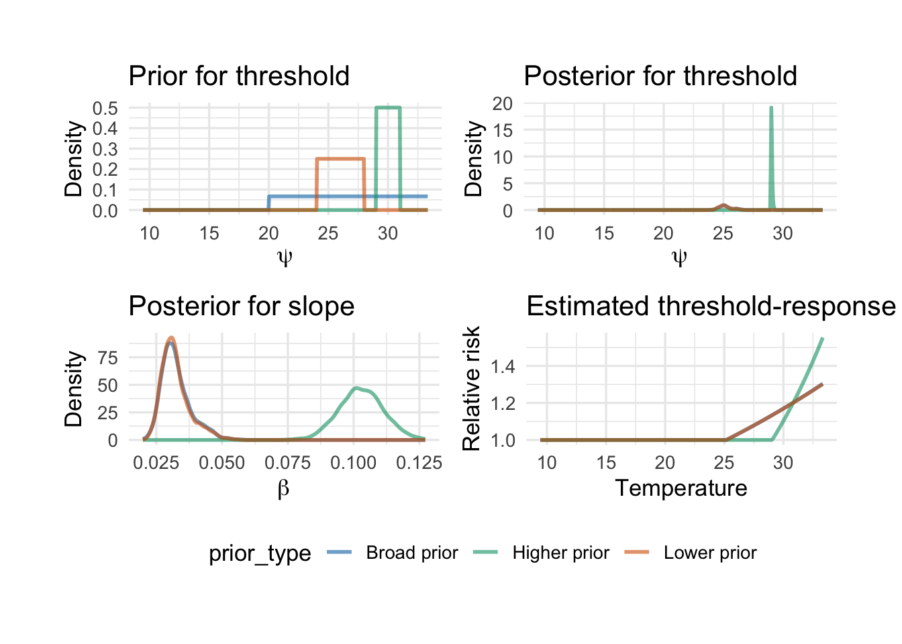

date death o3 x_o3
Min. :1987-01-01 Min. : 69.0 Min. :-0.832 Min. :-0.0832
1st Qu.:1990-07-02 1st Qu.:105.0 1st Qu.:11.960 1st Qu.: 1.1960
Median :1993-12-31 Median :114.0 Median :19.045 Median : 1.9045
Mean :1993-12-31 Mean :115.4 Mean :20.143 Mean : 2.0143
3rd Qu.:1997-07-01 3rd Qu.:124.0 3rd Qu.:26.624 3rd Qu.: 2.6624
Max. :2000-12-31 Max. :411.0 Max. :65.808 Max. : 6.5808
This comparison shows how the posterior for \(\beta\) depends on the prior.
In many real datasets, the posterior distributions are more similar than the prior distributions, indicating that the data are informative. However, stronger priors can still shift the posterior, especially when they encode substantial prior information.
Example 2: summer temperature threshold model
We now consider a second example where the parameter of interest is not just a regression coefficient, but a threshold.
We restrict the Chicago data to summer months and fit a linear-threshold model for temperature:
\[
Y_t \sim \text{Poisson}(\mu_t)
\]
\[
\log(\mu_t) = \alpha + \beta (T_t - \psi)_+
\]
where:
\(T_t\) is summer temperature,
\(\psi\) is the threshold,
\(\beta\) is the slope above the threshold.
Our goal is to see how the prior on \(\psi\) affects:
date death temp
Min. :1987-06-01 Min. : 69.0 Min. : 9.444
1st Qu.:1990-07-16 1st Qu.: 99.0 1st Qu.:19.722
Median :1994-01-15 Median :107.0 Median :22.222
Mean :1994-01-15 Mean :108.2 Mean :22.192
3rd Qu.:1997-07-16 3rd Qu.:115.0 3rd Qu.:25.000
Max. :2000-08-31 Max. :411.0 Max. :33.333
p1 <-ggplot(psi_prior_df, aes(x = x, y = density, color = prior_type)) +geom_line(linewidth =1, alpha =0.6) +scale_color_manual(values =c("Broad prior"="#0072B2","Lower prior"="#D55E00","Higher prior"="#009E73" )) +labs(title ="Prior for threshold", x =expression(psi), y ="Density") +theme_minimal(base_size =13) +theme(legend.position ="none")p2 <-ggplot(psi_post_df, aes(x = x, y = density, color = prior_type)) +geom_line(linewidth =1, alpha =0.6) +scale_color_manual(values =c("Broad prior"="#0072B2","Lower prior"="#D55E00","Higher prior"="#009E73" )) +labs(title ="Posterior for threshold", x =expression(psi), y ="Density") +theme_minimal(base_size =13) +theme(legend.position ="none")p3 <-ggplot(beta_plot_df, aes(x = x, y = density, color = prior_type)) +geom_line(linewidth =1, alpha =0.6) +scale_color_manual(values =c("Broad prior"="#0072B2","Lower prior"="#D55E00","Higher prior"="#009E73" )) +labs(title ="Posterior for slope", x =expression(beta), y ="Density") +theme_minimal(base_size =13) +theme(legend.position ="none")p4 <-ggplot(curve_df, aes(x = temp, y = value, color = prior_type)) +geom_line(linewidth =1, alpha =0.6) +scale_color_manual(values =c("Broad prior"="#0072B2","Lower prior"="#D55E00","Higher prior"="#009E73" )) +labs(title ="Estimated threshold-response",x ="Temperature",y ="Relative risk" ) +theme_minimal(base_size =13) +theme(legend.position ="bottom")((p1 | p2) / (p3 | p4)) +plot_layout(guides ="collect") &theme(legend.position ="bottom")

Interpretation
This example shows that priors can matter not only for regression coefficients, but also for structural parameters such as thresholds.
Changing the prior on \(\psi\) can affect:
the posterior location of the threshold,
the posterior of the slope above threshold,
and the implied temperature-mortality relationship.
This is a useful reminder that prior sensitivity should be checked not only for coefficients, but also for model structure.
Closing remarks
In this lab session, we explored two simple Bayesian models using the Chicago mortality dataset.
First, we examined how different priors for \(\beta\) affect posterior inference in a Poisson regression model.
Second, we studied a summer temperature threshold model and showed how different priors for \(\psi\) affect both the posterior threshold and the estimated slope above it.
Together, these examples illustrate an important practical point:
prior choice should be explicit,
priors should be chosen on an interpretable scale,
and sensitivity analysis is an essential part of Bayesian workflow.